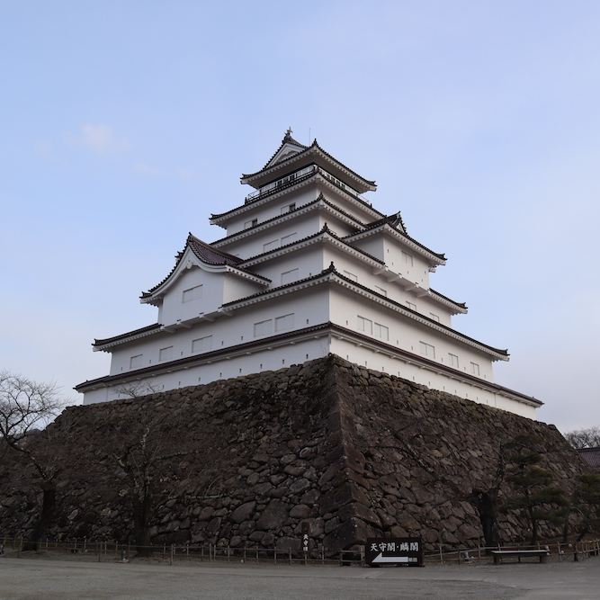
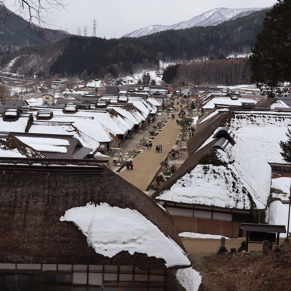

AIZU DISTRICT
OVERVIEW
Aizu is the westernmost of the three regions of Fukushima Prefecture, Japan, the other two regions being Nakadōri in the central area of the prefecture and Hamadōri in the east. As of October 1, 2010, it had a population of 291,838. The principal city of the area is Aizuwakamatsu.
During the Edo period, Aizu was a feudal domain known as Aizu Domain. It was part of Mutsu Province; the area once was part of Iwase Province in the 8th century and, before the prefectural system, Iwashiro Province. Although never an official province in its own right, Aizu was considered as such de facto, and even today local Japan Rail stations prefix "Aizu-" to names instead of "Iwashiro-", as it was for stations around the center of Fukushima Prefecture.
DESTINATION
AIZUWAKAMATSU
Aizu-Wakamatsu is a castle town in the interior of Fukushima Prefecture which is known for its award-winning sake and its samurai tradition. Towards the end of Japan's feudal era, the Aizu clan remained loyal to the shogun even after the feudal leader was removed from power in the Meiji Restoration. As a result, the town became a battle ground of the Boshin War in 1868.
Aizu-Wakamatsu is surrounded by mountains of which Mount Bandai is the regional landmark. Many hiking and skiing opportunities and scenic beauty can be enjoyed in the city's natural surroundings. The Aizu region escaped heavy contamination from the nuclear accident in 2011, and radiation levels have returned to pre-accident levels
Ouchi-jyuku
Ouchijuku is a former post town along the Aizu-Nishi Kaido trade route, which connected Aizu with Nikko during the Edo Period. Restrictions set by the shogunate required travelers to make their long journeys on foot and as a result, post towns developed along the routes to provide travelers with food, accommodations and rest.
Today, Ouchijuku has been restored to look as it did in the Edo Period with telephone and electricity wires buried. The unpaved main street is lined by thick thatched roof buildings, which house a variety of shops, restaurants and minshuku (gallary traditional Japanese inns). Soba noodles and locally caught char fish roasted on sticks are popular specialties.